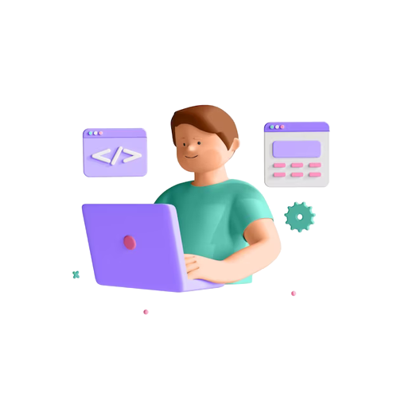

Hi, My name is Dipen Kumar.
I am a

About Me
I am a passionate web developer with a strong interest in front-end technologies. I love building user-friendly and interactive websites that leave a positive impact on users.
Projects

Contact Me
Email: example@email.com
Phone: +1 123-456-7890
Skills
- Web Development
- Frontend: HTML, CSS, JavaScript
- Backend: Node.js, Express
- Database: MongoDB